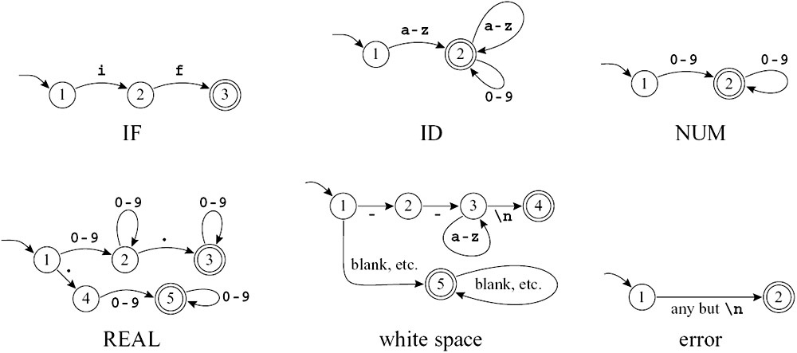
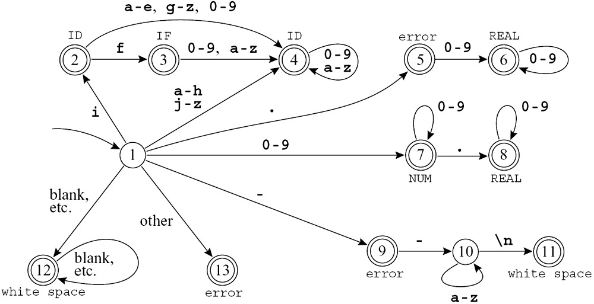
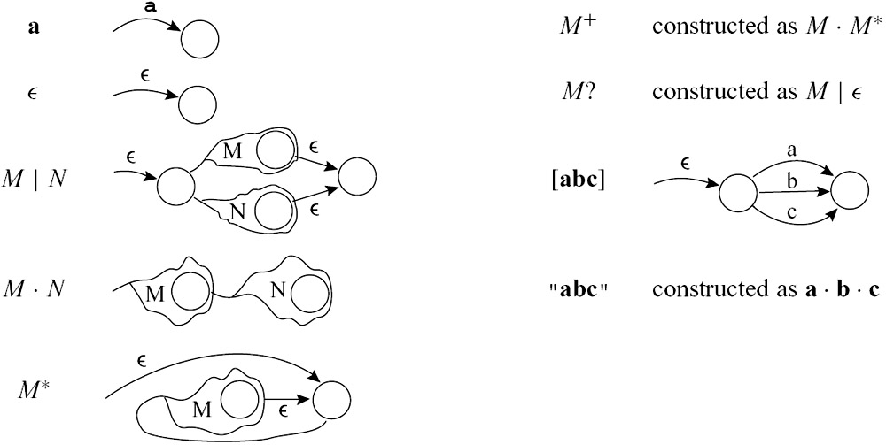

词法分析¶
约 4491 个字 62 行代码 4 张图片 预计阅读时间 23 分钟
为什么要把词法分析和语法分析分开
从本质上来说,词法分析使用的是DFA,语法分析使用的是CFG,如果不先做一步词法分析,语法分析当然也能涵盖词法分析的能力,但是会让语法分析的过程显得更复杂
Lexical Token¶
词法分析器会把字符流切分为一系列 Token。常见类别如下:
区分元字符与字面量
在正则中,. 通常是元字符；但放进引号后(如 "a.*"),可按普通文本处理。
| Token 类别 | 作用 | 示例 |
|---|---|---|
| 关键字 (Keyword) | 语言保留字,有固定语义 | if, while, int, return |
| 标识符 (Identifier) | 程序员定义的名字 | sum, count, main |
| 字面量 (Literal) | 直接写在代码里的常量值 | 123, 3.14, 'a', "hello" |
| 运算符 (Operator) | 表示运算或比较 | +, -, *, /, ==, = |
| 分隔符 (Delimiter / Punctuation) | 分隔语句或表达式结构 | ;, ,, (, ), {, } |
实际上,字面量还可以分为NUM(整数)与REAL(实数)等.
类似的, 还有一些内容被称为 Non-tokens，它们在经过词法分析器时会被直接跳过或丢弃，不生成 Token 传递给语法分析器，主要包括：
-
空白字符 (Whitespaces)：包括空格 (Space)、制表符 (Tab)、换行符 (Newline) 等。它们的作用通常仅是为了分隔其他的 Token。
-
注释 (Comments)：包括单行注释（如
// ...）和多行注释（如/* ... */）。代码注释纯粹是为了人类阅读，对程序的语义没有实质影响。 -
预处理指令 (Preprocessor Directives)：比如在 C/C++ 中的
#include、#define等，它们通常在独立的预处理阶段或者词法阶段初就被执行或展开，不会作为原本的 Token 交给后端的分析阶段。
以下面这段代码为例:
#include<stdio.h>
#define ZERO 0.
/* find a zero */
float match0(char *s) {
if (!strncmp(s, "0.0", 3))
return ZERO;
}
有些编译器会预先过滤为:
对应的 Token 序列可以写成:
FLOAT ID(match0) LPAREN CHAR STAR ID(s) RPAREN LBRACE
IF LPAREN BANG ID(strncmp) LPAREN ID(s) COMMA STRING(0.0) COMMA NUM(3) RPAREN RPAREN
RETURN REAL(0.0) SEMI
RBRACE EOF
词法分析与 Token 规则总结
- 标识符规则 (Identifiers): 标识符由字母和数字组成，且首字符必须是字母。其中，下划线
_被视为字母。 - 大小写敏感 (Case Sensitivity): 大写字母和小写字母是不同的（例如
Var和var是两个不同的标识符）。 - 最长匹配原则 (Maximal Munch): 当输入流被解析为 Token 时，如果遇到一个字符，分析器会尽可能地去匹配能构成合法 Token 的最长字符串（例如遇到
==会解析为一个等号运算符 Token，而不是两个赋值运算符=分离的 Token）。 - 非记号过滤 (Non-tokens): 空白字符 (空格、制表符、换行符) 以及注释都会被直接忽略，除非它们的作用是用于分隔其他的 Token。
- 必要的分隔: 在某些情况下（如相邻的标识符、关键字、常量之间），必须需要使用空白字符将它们隔开，否则它们会被根据最长匹配原则合并为一个 Token。
正则表达式¶
重复的内容不讲了,在这里
| 写法 | 含义 | 示例说明 |
|---|---|---|
[abcd] |
匹配括号内任意一个字符 | 等同于 (a | b | c | d) |
[b-g] |
匹配范围内的任意一个字符 | 等同于 [bcdefg] |
[b-gM-Qkr] |
匹配多个范围或独立字符中的任意一个 | 等同于 [bcdefgMNOPQkr] |
M? |
匹配 \(M\) 零次或一次（可选） | 等同于 (M | ε) |
M+ |
匹配 \(M\) 一次或多次（至少一次） | 等同于 (M · M*) |
. |
匹配除换行符外的任意单个字符 | a.c 可匹配 abc、a9c |
"a.*" |
引号中的字符串按字面意义匹配 | 表示字符序列 a.* 本身,而不是“a 后跟任意字符” |
下面,我们可以看一些例子:
if { return IF; }
[a-z][a-z0-9]* { return ID; }
[0-9]+ { return NUM; }
([0-9]+"."[0-9]*)|([0-9]*"."[0-9]+) { return REAL; }
("--"[a-z]*"\n")|(" "|"\n"|"\t")+ { /* do nothing */ }
. { error(); }
-
if { return IF; }：遇到了保留字if，直接返回IF这个 Token。 -
[a-z][a-z0-9]* { return ID; }：匹配以小写字母开头，后接零个或多个小写字母/数字的字符串。这就是前面定义的标识符规则，返回ID。 -
[0-9]+ { return NUM; }：匹配一个或多个数字序列，返回整数型 TokenNUM。 -
([0-9]+"."[0-9]*)|([0-9]*"."[0-9]+) { return REAL; }：左半部分匹配123.这种形式，右半部分匹配.456这种形式，共同构成了浮点数规则，返回REAL。 -
("--"[a-z]*"\n")|(" "|"\n"|"\t")+ { /* do nothing */ }：用来匹配哪些Non-tokens-
左边
"--"[a-z]*"\n"用于匹配以--开头的单行注释。 -
右边
(" "|"\n"|"\t")+用于匹配一个及以上的空格、换行或制表符（空白字符）。
-
-
. { error(); }：.表示匹配除换行符以外的任何其他单字符。相当于一个兜底策略,如果前面的匹配都没对上,说明匹配出了问题,因此这里要返回一个报错
事实上,有了上面这些规则之后还无法完成词法分析的内容,因为仍然存在歧义
if8
"if8"既可以被识别为ID(if8),也可以被识别为IF NUM(8),我们应该如何区分这两种?
-
和计网里面学过的最长子网前缀匹配规则一样,当有一个串可以被多种方式匹配时,我们选择能匹配最长子串的方式,在这里就表现为
ID(if8) -
另外,如果两种方式都能匹配同样长的子串,我们按照匹配规则的重要性选择.因此,
if会被当作IF而不是ID(if),因为保留字的匹配优先级更高.
FA¶
自动机的内容在这里
如下图,之前讨论的正则表达式可以写为如下的DFA:
{kind=link}

DFA*6
考虑到划分token的优先级,我们可以把上面的DFA汇总为:
{kind=link}

DFA All-in-One
可以看到,在读取到一个
i的时候,会先认为读取到的是一个ID,但是如果后续读取到一个f,就会把之前的i和现在的f合并成一个IF,这就是最长匹配原则和优先级原则的体现.
上面画成图之后,人比较容易看懂；但编译器真正实现时,一般不会拿着图一条边一条边地找,而是会把整个 DFA 编码成一个状态转移表 (transition matrix)。
DFA 的表驱动实现¶
所谓 transition matrix,本质上就是一个二维数组:
-
行表示当前状态编号
-
列表示当前读到的输入字符
-
表里的值表示: 读到这个字符后,应该跳到哪个状态
也就是说,原来图上的一条边:
现在就可以写成:
这样做的好处是,运行时不需要“在图里找边”,只要查一次表就行.
例如:
int edges[][] = {
/* columns {0,1,2,...,-,...,e,f,g,h,i,j,...} */
/* state 0 */ {0,0,...},
/* state 1 */ {0,0,...7,7,7...9...4,4,4,4,2,4...},
/* state 2 */ {0,0,...4,4,4...0...4,3,4,4,4,4...},
...
}
它表达的意思其实很朴素:
-
state 1这一行: 表示“当前在状态 1 时”,如果输入不同字符,分别该跳到哪里 -
比如某几列是
7,7,7,表示读到那几类字符时,都跳到状态 7 -
某一列是
2,表示读到那个特定字符时,跳到状态 2 -
某些列是
0,表示这个字符在当前状态下走不通
Dead State¶
为了统一处理“没有这条边”的情况,通常会专门留一个 Dead State（死状态）,一般记为 state 0.
它有两个特点:
- 如果某个状态遇到不合法字符,就跳到
state 0 state 0无论再读到什么字符,都还停在state 0
也就是所谓的“掉进去就出不来了”.
这行的含义就是: 从死状态出发,读任何字符都回到自己.
Finality Array¶
光有 edges 还不够,因为它只告诉我们怎么走,却没有告诉我们走到这里意味着什么。
所以还要再配一个 Finality Array，它的作用是记录:
-
哪些状态是终态 (final state)
-
这个终态对应的 Token 或动作是什么
例如:
意思就是:
-
如果扫描最后停在状态 2,说明当前识别出了一个
ID -
如果停在状态 5,说明识别出了一个
NUM -
如果停在状态 8,说明识别出了一个
REAL
所以PPT里说的:
A "finality" array, mapping state numbers to actions
其实就是“建立一个从状态编号到动作/Token 类型的映射表”.
可以粗略写成:
int finality[] = {
/* 0 */ NONE,
/* 1 */ NONE,
/* 2 */ ID,
/* 3 */ NONE,
/* 4 */ ID,
/* 5 */ NUM,
...
};
其中:
-
NONE表示这个状态还不是一个合法终态 -
ID、NUM之类表示: 如果停在这里,就应该返回对应的 Token
前面说了 edges 和 finality 怎么配合,下面可以直接看一个真正扫描输入串的过程。
假设当前输入是:
按表驱动方式扫描 if --not-a-com
这里表格里的几列可以这样理解:
| 列名 | 含义 |
|---|---|
Last Final |
最近一次到达的终态编号 |
Current State |
当前自动机所在状态 |
Current Input |
还没处理的输入,下划线 _ 表示当前读头位置 |
Accept Action |
如果此时需要停下来,应该执行什么动作 |
其中 Last Final 很关键,因为它记录的是:
- 虽然我们还在继续往后读
- 但“最近一次曾经读成一个合法 Token”的位置在哪里
这正是最长匹配原则在实现里的落点.
一开始从初态出发:
读入 i 之后,到达某个可接受状态.此时:
- 当前串
i可以先被看成一个普通标识符前缀 - 所以
Last Final会先被更新
继续读入 f 之后:
- 自动机进入代表
IF的终态 Last Final更新为这个更“高级”的终态
再继续往后看,下一个字符是空格,而 IF 后面不能再直接接字母数字继续扩展:
这一步的意思是:
- 继续尝试转移时,发现走不通,掉进了
state 0 - 但没关系,因为我们还记得最近一次合法终态是
3 - 所以此时回退到那个终态对应的位置,执行
return IF
这就是:
- 先尽量往后读
- 一旦走不动,就返回最近一次合法匹配
识别完 IF 之后,扫描器不会停机,而是继续从空格开始扫描:
Last Final Current State Current Input
0 1 if_ --not-a-com
12 12 if _--not-a-com
12 0 if _--not-a-com found white space; resume
这里说明:
- 空格本身也可以被 DFA 识别成某种“非 token”
- 对应的动作不是返回一个真正的 Token
- 而是
found white space; resume,也就是“发现空白符,跳过后继续扫描”
所以空白符虽然也会被自动机识别,但最后不会送给语法分析器.
继续往后,输入来到:
自动机开始尝试匹配:
Last Final Current State Current Input
0 1 if _--not-a-com
9 9 if -_-not-a-com
9 10 if --n_ot-a-com
9 10 if --no_t-a-com
...
9 0 if --not-a_com error, illegal token '-'; resume
-
扫描器起初把
-当成可能的注释 -
所以
Last Final先记下了状态9 -
但随着后面继续读入,发现出现了[a-z]与
\n之外的字符,说明是语法错误 -
最终转移失败,进入
state 0
于是扫描器就会:
-
回到最近一次合法终态
-
发现那个终态其实只对应一个单独的
- -
但这里的上下文下它并不能构成合法 token
-
因此报错:
illegal token '-'.这里的'-'指的是那个第一个-,因为Final State中只读到了那个-,后面的-not-a-com都没读到,所以报错时只能说是那个-不合法
后面的 resume 表示:
- 报错之后,扫描器不会整个停止
- 而是跳过这个出错位置,从后面继续扫描
-
自动机每读一个字符,就按
edges转移 -
如果当前状态是终态,就更新
Last Final -
只要还能继续匹配,就继续读
-
一旦走不通,也就是没有对应的转移,进入了State 0,就根据
Last Final决定返回 token、跳过空白符,或者报告词法错误
词法分析器不是“读到一个字符就立刻决定”,而是会一边向前试探,一边记住最近一次合法终态。
这样一来,既能实现最长匹配,也能在失败时知道应该返回哪个 token、跳过哪些内容、或者从哪里开始报错并继续扫描。
{kind=link}
NFA¶
如这里所讲,把正则表达式转换为一个NFA,再将NFA转换为DFA,是比较可行的一种做法.
{kind=link}

RE->NFA
NFA转DFA的算法from codex
也可以看 https://blog.csdn.net/weixin_43655282/article/details/108963761
实际上,就是一直从开始状态的\(\epsilon\)-closure出发,不断地计算新的状态集合,直到没有新状态产生为止.
在真正构造之前,先要会两个操作:
-
ε-closure(S): 从状态集合S出发,只沿着ε边一直走,所有能到达的状态都算进来 -
move(S, a): 从状态集合S出发,读入字符a后,所有可能到达的状态集合
实际构造时,每次真正算的新状态都是:
设 NFA 的开始状态为 s0,那么:
-
先算出
ε-closure({s0}) -
把这个状态集合作为 DFA 的初态
-
对每个还没处理过的 DFA 状态
S,以及每个输入字符a:-
计算
T = ε-closure(move(S, a)) -
从
S向T连一条标号为a的边 -
如果
T是新集合,就把它加入 DFA 状态集合
-
-
重复上一步,直到没有新状态产生为止
\(F' = \{K \subseteq Q \mid K \cap F \neq \emptyset\}\)：终止状态集包含所有与NFA终止状态有交集的状态子集。
DFA中的等价状态¶
在得到NFA转换而来的DFA之后,有时我们可以对这个DFA进行最小化处理,也就是合并一些等价状态。
等价状态 (Equivalent States)
如果对于DFA中的两个状态 p 和 q，对于任意输入字符串 w，从状态 p 出发经过输入 w 最终停在一个接受状态的条件与从状态 q 出发经过输入 w 最终停在一个接受状态的条件完全相同，那么我们就称状态 p 和 q 是等价的。
划分等价状态的方法 (分组法)
这个方法的思想是: 不直接去证明“两个状态对任意字符串都一样”,而是先把看起来可能等价的状态放进同一组,再不断把其中“不真的等价”的状态踢出去。
第一步只按“是不是终态”分:
-
所有终止状态放在一组
-
所有非终止状态放在一组
这是因为:
-
终态和非终态一定不等价
-
但同为终态的状态,或者同为非终态的状态,还有可能等价
接下来检查每一个组内部的状态。
对于同一组里的两个状态 s 和 t,如果对某个输入符号 a,它们转移到的状态不在同一组,那么 s 和 t 就不应该留在同一组里。
更形式化一点地说:
-
s和t能留在同一组 -
当且仅当对每个输入符号
a,都有trans[s, a]和trans[t, a]落在同一组
如果不满足,就把原来的组拆开,形成几个更小的新组。
然后:
-
对所有组重复这个检查
-
只要某个组还能继续拆,就继续拆
-
直到所有组都稳定下来,不再变化为止
最后剩下的这些组,就对应最小化 DFA 里的状态。
当分组稳定后:
-
每一个组,就是最小 DFA 的一个状态
-
原来 DFA 的开始状态属于哪个组,哪个组就是新 DFA 的开始状态
-
只要一个组里含有原来的某个终态,这个组就是新 DFA 的终态
新 DFA 的边也很好加:
-
因为同一组里的所有状态,在同一个输入符号下,都会转移到同一组
-
所以可以直接把“组”当作新状态来连边
设这个 DFA 的状态集合是:
输入字母表:
终态是:
转移表如下:
| 状态 | 0 |
1 |
|---|---|---|
A |
B |
C |
B |
A |
D |
C |
E |
C |
D |
E |
D |
E |
E |
E |
先按“终态/非终态”分组:
因为终态和非终态肯定不等价。
接着检查终态组 \{C, D\}。
对状态 C:
-
读
0时,C \to E,而E在组\{A,B,E\} -
读
1时,C \to C,而C在组\{C,D\}
所以 C 的去向模式是:
对状态 D:
-
读
0时,D \to E,而E在组\{A,B,E\} -
读
1时,D \to D,而D在组\{C,D\}
所以 D 的模式也是:
因此 C 和 D 仍然等价,这一组不用拆。
再检查非终态组 \{A, B, E\}。
对状态 A:
- 读
0时,A \to B,而B在\{A,B,E\} - 读
1时,A \to C,而C在\{C,D\}
模式是:
对状态 B:
-
读
0时,B \to A,而A在\{A,B,E\} -
读
1时,B \to D,而D在\{C,D\}
模式也是:
对状态 E:
- 读
0时,E \to E,而E在\{A,B,E\} - 读
1时,E \to E,而E仍在\{A,B,E\}
模式是:
所以 A 和 B 模式相同,但 E 不同,这一组需要拆开:
于是新的划分为:
现在继续检查还能不能再拆。
检查 \{A,B\}:
A的模式是(\{A,B\}, \{C,D\})B的模式也是(\{A,B\}, \{C,D\})
所以这一组不用拆。
检查 \{C,D\}:
C的模式是(\{E\}, \{C,D\})D的模式也是(\{E\}, \{C,D\})
所以这一组也不用拆。
\{E\} 只有一个状态,当然也不用拆。
因此最终分组稳定为:
所以最小化后:
A和B合并成一个状态C和D合并成一个状态E单独保留
把新状态记成:
X = [A,B]Y = [C,D]Z = [E]
则最小 DFA 的转移表为:
| 新状态 | 0 |
1 |
|---|---|---|
X = [A,B] |
X |
Y |
Y = [C,D] |
Z |
Y |
Z = [E] |
Z |
Z |
其中唯一的终态是: